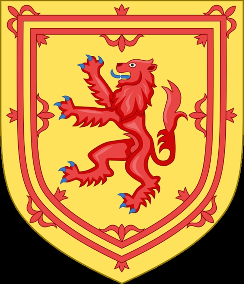

384571525 Queen Margret of Wessex
* 1045 Ungern
† 1093-11-16 Edinburgh Castle, Scotland
Drottning
Blev högst 48 år
769143050 Prince Edward Atheling of Wessex
* omkring 1016
† 1057 London, England
Prins
Blev ca 41 år
769143051 Princess Agathe Arpad of Hungary
Prinssesa
1538286102 King Stephan I of Hungary
* omkring 975 Hungary
† 1038-08-15 Esztergom, Hungary
Kung av Ungern
Blev ca 63 år
1538286103 Queen Gisella of Bavaria
* 975 Bavaria, Tyskland
† Passau, Bavaria, Tyskland
Drottning av Ungern